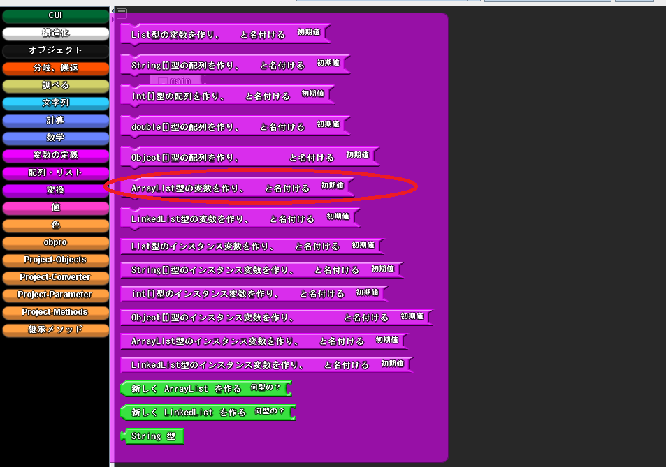
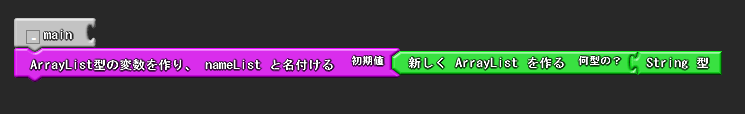
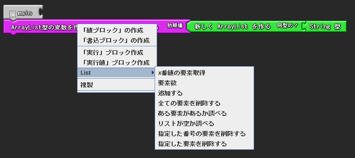
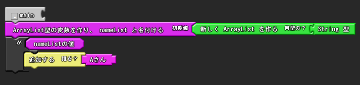
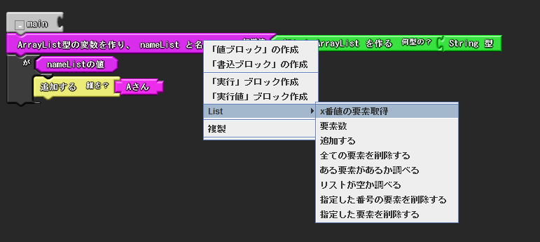
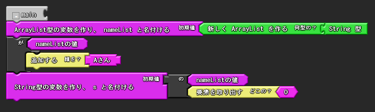
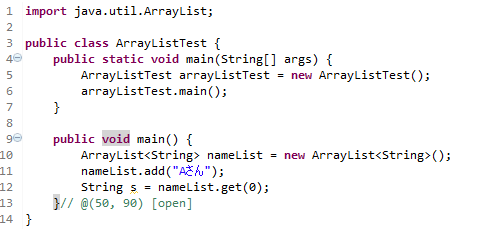

Listの宣言
Listブロックの格納場所
Listブロックはファクトリの「配列・リスト」から取り出すことができます．List,ArrayList,LinkedListが利用できます．例として，ArrayListで説明を行います．

Listの宣言
ローカル変数同様に，取り出してブロックを結合することで宣言することができます．この際，「新しくArrayListを作る」と書かれたブロックの右側に，宣言するListの型を指定します．下の例ではString型の配列を宣言しています．

リストへの要素の追加と削除
リストへの要素の追加
リストへ要素を追加するには，リストクラスの持つメソッドを通じて要素の追加を行う必要があります．
リストの変数宣言ブロックを右クリックし，Listと書かれたメニューをマウスオーバーします．
すると，ArrayListクラスの利用可能なメソッドが表示されます．この中から，「要素を追加する」をクリックします．

この作成されたブロックの「追加する」と書かれたブロックに，追加する要素の値ブロックを結合します．
次の例では，String型の要素をもつArrayListに対して，"Aさん"という要素を追加しています．

追加した要素は，0番目から順番にリストに追加されていきます．
リストの要素の取り出し
リストに追加した要素は，要素の追加時同様に．メソッドを通じて取り出すことができます．
リストへの要素の追加を行う際には，リストの変数宣言ブロックを右クリックし，ArrayListと書かれたメニューをマウスオーバーします．
すると，ArrayListクラスの利用可能なメソッドが表示されます．この中から，「x番目の要素取得」をクリックします．

この作成されたブロックの「要素を取り出す」と書かれたブロックに，取り出す要素の番地の値を結合します．
例えば，リストへの要素の追加で追加したString型の要素を取り出すには，次のようにします．

最後にここまでの結果をJavaに変換したコードを以下に示します．add("Aさん")が「要素を追加する」 ，get(0)が「x番目の要素取得」に対応しています．

その他
その他，リストではリストに追加された要素の数を取得することや，追加要素をすべて削除することなどができます．
利用可能なメソッドは，ブロックを右クリックして参照してください．